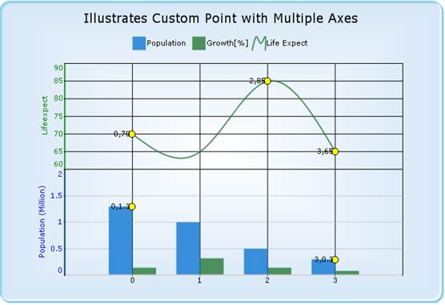

The custom points for the Secondary axis can be achieved by assigning the Series Index for the ChartCoordinates type.
The following code snippet illustrates this:
|
[C#] ChartCustomPoint cp = new ChartCustomPoint(); cp.CustomType = ChartCustomPointType.ChartCoordinates; //Set the series index if the Customtype is ChartCoordinates in multiple axis cp.SeriesIndex = 0; cp.XValue = 10; cp.YValue = 60; cp.Symbol.Shape = ChartSymbolShape.Circle; cp.Alignment = ChartTextOrientation.Left; cp.Color = Color.Black; cp.Font.Facename = "Verdana"; cp.Font.Size = 8.0F; cp.Symbol.Color = Color.Yellow; cp.Text = cp.XValue + "," + cp.YValue; this.ChartWebControl1.CustomPoints.Add(cp); |
|
[VB] Dim cp As ChartCustomPoint = New ChartCustomPoint() cp.CustomType = ChartCustomPointType.ChartCoordinates 'Set the series index if the Customtype is ChartCoordinates in multiple axis cp.SeriesIndex = 0 cp.XValue = 10 cp.YValue = 60 cp.Symbol.Shape = ChartSymbolShape.Circle cp.Alignment = ChartTextOrientation.Left cp.Color = Color.Black cp.Font.Facename = "Verdana" cp.Font.Size = 8.0F cp.Symbol.Color = Color.Yellow cp.Text = cp.XValue & "," & cp.YValue Me.ChartWebControl1.CustomPoints.Add(cp) |

Figure 235: Custom Points in Multiple Axes